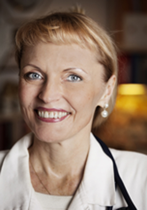
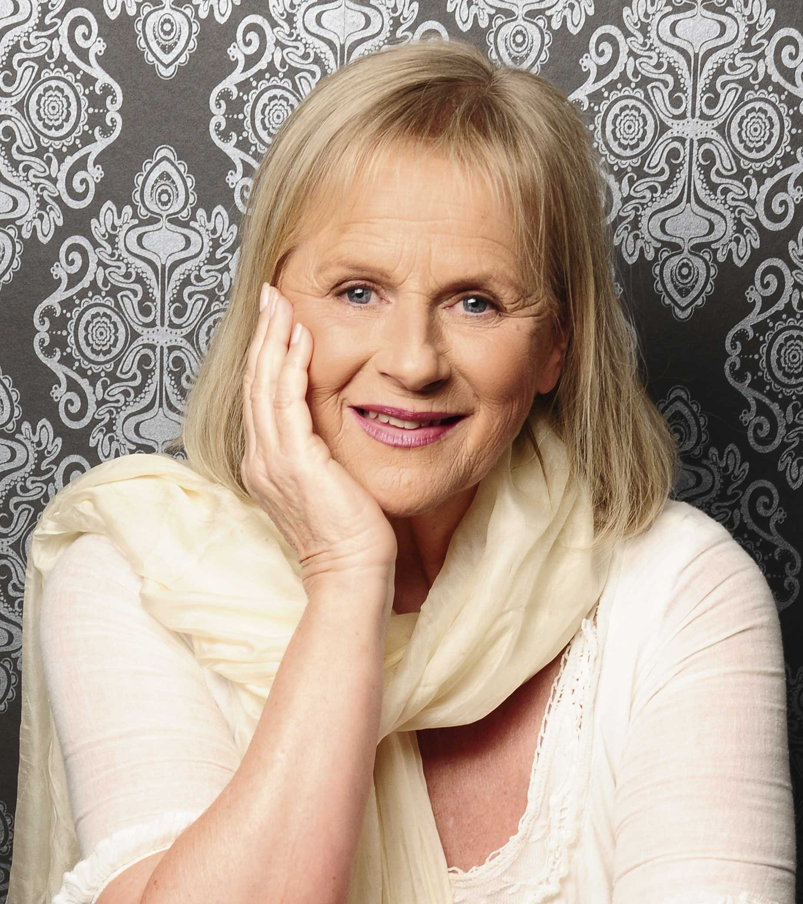

Dr. Nancy Lonsdorf är leg. läkare och dessutom en av världens främsta experter på Ayurveda för kvinnor. Under mer än tjugo år har hon behandlat fler än 10 000 kvinnor med dess naturliga och effektiva metoder vilket har givit henne en helt unik erfarenhet. Hon har också varit medicinsk ledare för Amerikas största Maharishi Ayurveda-hälsocenter. Hon är en populär talare och känd från amerikansk nationell TV och många andra media.
Med TV-succén Twin Peaks och filmer såsom Eraserhead, The Elephant Man, Wild at Heart, Blue Velvet, Mulholland Drive och INLAND EMPIRE har David Lynch gjort sig känd som en av de mest originella och kreativa filmskapare som världen har skådat. Han har Oscar-nominerats tre gånger samt vunnit guldpalmen, det finaste priset vid filmfestivalen i Cannes.
Dr. Kumuda Reddy är leg. läkare. Efter att i 25 år ha utövat västerländsk medicin riktade hon in sig mot Ayurveda och är nu en av världens främsta experter på Maharishi Ayurveda för barn.
Linda Egenes är adjungerad universitetslektor i skrivande vid Maharishi University of Management. Hon har skrivit flera böcker om Maharishi Ayurveda.

Charlotte Beck är en erfaren läkare som också är en av Nordens främsta experter på Maharishi Ayurveda. Hon har skrivit flera böcker om holistisk hälsa och är dessutom en regelbunden skribent i flera hälsotidskrifter. Hon intervjuas ofta i såväl TV som radio och tidningar och hon är en populär föredragshållare och kursledare.

Erika Mikaelsson, född i lappländska Sorsele, har arbetat som nyhetsjournalist under större delen av sitt liv, med anställningar både inom tidning, radio och TV bl a som programledare och redaktör för sena nyheterna på SvT. Hon har också drivit förlag och givit ut två tidigare böcker.
2009 startade hon den webbaserade TV-kanalen greatpeople med enbart inspirerande nyheter och berättelser. 2011 grundade hon Great People Media tillsammans med sex experter, som en icke vinstdrivande mediastiftelse med avsikt att söka pengar för att utbilda grupper som inte hörs i medierna, bl a fattiga ungdomar i Afrikas slum i Nairobi Kenya, handikappade kvinnor i Uganda och indianungdomar i Bolivia.
Sara Varga är en av Sveriges mest populära sångerskor och låtskrivare. Hon har hittills gett ut två album och ett tredje är på gång. År 2011 gick hon till final i melodifestivalen med låten Spring för livet. Låten gick sedan direkt in på förstaplats i Svensktoppen och låg kvar där i nästan fyra månader. Hon är också en omtyckt konstnär och poet. Hon har varit en framgångsrik DJ och tidigare gett ut boken Från groda till prins.
Yvonne Lagrosen är docent i kvalitetsutveckling. Hon har i många år forskat om hur man skapar kvalitet i organisationer och om kopplingen mellan kvalitet och hälsa i arbetslivet. På senare tid har hennes forskning om hjärnfunktion, prestationsförmåga och kreativitet väckt internationellt intresse.
Stefan Lagrosen är professor i företagsekonomi och forskar om marknadsföring, kvalitetsutveckling och arbetsrelaterad hälsa. Han hyser också ett stort intresse för renässansens konst, filosofins mysterier och andlighetens djup.